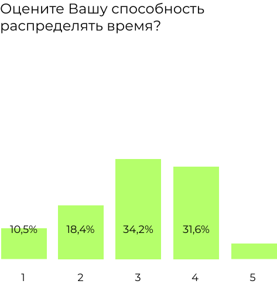
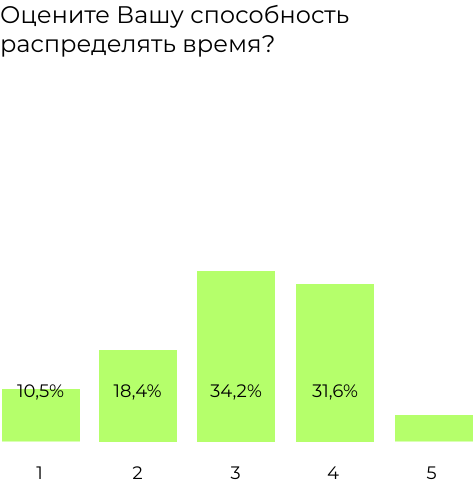

На вопрос с множественным выбором о предпочтительном формате учебы или работы были получены различные сочетания. Наиболее часто встречающиеся:
21% респондентов выбрали набор ответов, связанных с оффлайн-форматом: «Мне комфортно работать/учиться дома, Я люблю активный образ жизни, Мне нравится работать/учиться в коллективе и взаимодействовать с людьми»;
13% предпочитают онлайн формат: «Мне комфортно работать/учиться дома, Я не люблю часто выходить из дома, У меня вызывает трудности ездить на работу/учёбу каждый день»;
11% респондентов также предпочитают оффлайн-формат: «Мне нравится работать/учиться в коллективе и взаимодействовать с людьми»;
11% опрашиваемых выбрали «Мне нравится работать/учиться в коллективе и взаимодействовать с людьми»;
8% предпочитают онлайн формат, указав: «Мне комфортно работать/учиться дома, Я не люблю часто выходить из дома»;
Другие наборы предпочтений были выбраны с меньшей частотой.


 
